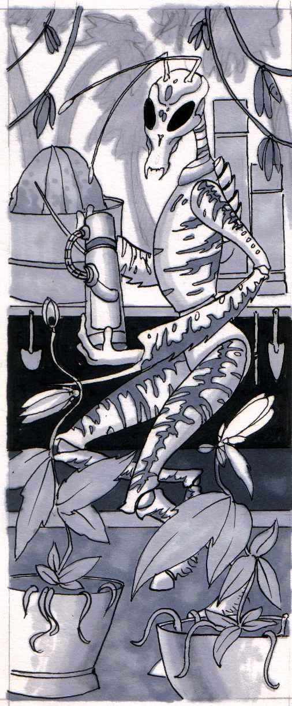
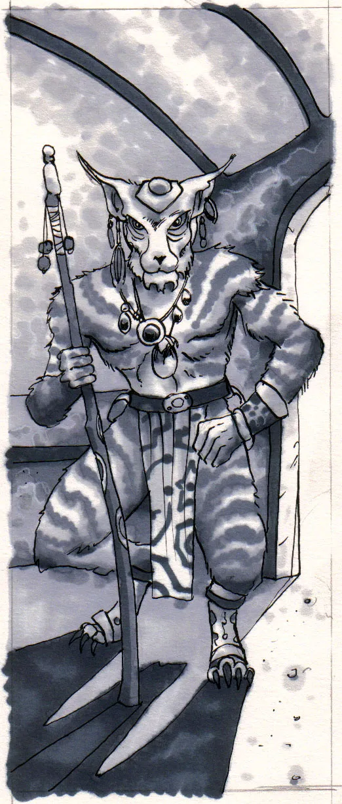
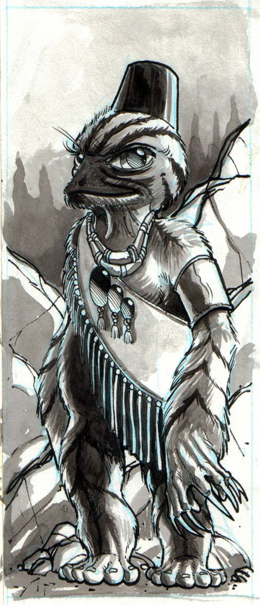

Non-Player Races
This page showcases all of the Non-Player races in the game. Please review each of them as you may encounter them in your next adventure.

Aracnian
Standing over 2.5 meters, on average, an Aracnians physical structure is a testament the light gravity in which they evolved. Only 70% that of Earth they can generally be described as a thin gaunt race.

Faborian
The body of a Faborian is sturdy and muscular. They posses powerful legs and arms, for a total of four limbs. Perched on top of a slender neck and a barrel like chest is the head.

Mahendoshi
Mahendoshi are short, stout subterranean creatures, similar to terrestrial moles. They average only 0.5 meters in height, yet typically mass over 35kg due to their increased cellular density.

Vjesperé
Vjesperé are aquatic, hexapoid, bipeds of a close mammalian decent, their actual ancestry being intertwined to that of the amphibian and whose form can be most aptly described as, humanoid.

Sooacoli
The Sooaacoli structure seems never to follow any anatomic rules, Their curved bones and their dense muscle tissues make them the subject of study and unfortunate under estimation.